Объект дуги на холсте, в самой общей форме, представляет собой клиновидный сегмент, вырезанный из эллипса. Это включает в себя целые эллипсы и круги как частные случаи. См. Раздел 8.11, “Объекты овалов на холсте” для более подробной информации о геометрии нарисованного эллипса.
Для создания объекта дуги на холсте C используйте:
id = C.create_arc(x0, y0, x1, y1, option, ...)
Конструктор возвращает идентификатор нового объекта дуги на холсте C.
Точка (x0, y0) - верхний левый угол, а (x1, y1) - нижний правый угол прямоугольника, в который вписан эллипс. Если этот прямоугольник квадратный, то получится круг.
Различные опции включают:
Таблица 7. Опции объекта дуги на холсте
activedashactivefillactiveoutlineactiveoutlinestippleactivestippleactivewidth |
Эти опции применяются, когда дуга находится в состоянии tk.ACTIVE, то есть, когда мышь находится над дугой. Например, опция activefill указывает цвет заливки при активной дуге. Для значений опций см. соответственно dash, fill, outline, outlinestipple, stipple и width. |
dash |
Шаблон пунктира для контура. См. Раздел 5.13, “Шаблоны пунктира”. |
dashoffset |
Смещение шаблона пунктира для контура. См. Раздел 5.13, “Шаблоны пунктира”. |
disableddashdisabledfilldisabledoutlinedisabledoutlinestippledisabledstippledisabledwidth |
Эти опции применяются, когда state дуги - tk.DISABLED. |
extent |
Ширина сегмента в градусах. Сегмент начинается под углом, заданным опцией start, и продолжается против часовой стрелки на extent градусов. |
fill |
По умолчанию заливка дуги прозрачна, и fill='' выберет это поведение. Вы также можете установить эту опцию на любой цвет, и внутренее пространство дуги будет заполнено этим цветом. |
offset |
Смещение шаблона штриховки для интерьера дуги. См. Раздел 5.14, “Согласование шаблонов пунктира”. |
outline |
Цвет границы вокруг внешней части сегмента. По умолчанию - черный. |
outlineoffset |
Смещение шаблона штриховки для контура. См. Раздел 5.14, “Согласование шаблонов пунктира”. |
outlinestipple |
Если используется опция outline, эта опция указывает битовое изображение, используемое для штриховки границы. По умолчанию - черный, и это значение по умолчанию можно задать, установив outlinestipple=''. |
start |
Начальный угол сегмента, в градусах, измеренный от направления +x. Если опущено, вы получите весь эллипс. |
state |
По умолчанию эта опция равна tk.NORMAL. Ее можно установить в tk.HIDDEN, чтобы сделать дугу невидимой, или в tk.DISABLED, чтобы сделать ее серой и нереагирующей на события. |
stipple |
Битовое изображение, указывающее, как будет штриховаться интерьер дуги. По умолчанию - stipple='' (сплошной). Вероятно, вам понадобится что-то вроде stipple='gray25'. Не имеет эффекта, если fill установлен на какой-либо цвет. |
style |
По умолчанию рисуется весь сегмент; используйте style=tk.PIESLICE для этого стиля. Чтобы нарисовать только круговой сегмент, используйте style=tk.ARC. Чтобы нарисовать круговой сегмент и хорду (прямую линию, соединяющую конечные точки сегмента), используйте style=tk.CHORD.  |
tags |
Если это строка, дуга помечается этой строкой. Используйте кортеж строк, чтобы пометить дугу несколькими тегами. См. Раздел 8.4, “Теги холста”. |
width |
Ширина границы вокруг внешней части дуги. По умолчанию - 1 пиксель. |